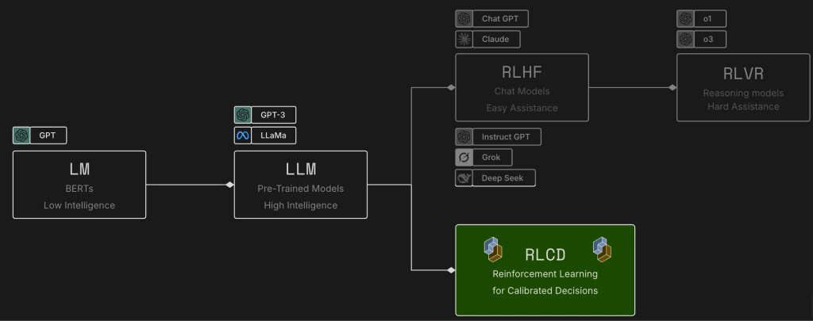

Флагман TypeSafe и первая модель System One. На вход идёт state: строка, JSON или массив строк. На выход — поля заданного типа. Генерации текста нет, разбирать prose не нужно.
TypeSafe · System One · 1 / 20
Большие языковые модели пишут текст для человека. Когда суждение нужно программе, этот текст приходится принуждать к структуре и снова разбирать. System One сделан для другого: быстрое структурированное решение, которым код пользуется напрямую.
Флагман TypeSafe и первая модель System One. На вход идёт state: строка, JSON или массив строк. На выход — поля заданного типа. Генерации текста нет, разбирать prose не нужно.
Каждый вопрос считается отдельно и параллельно. Новый вопрос почти не меняет время ответа и не создаёт context-rot. У Choice и Score есть confidence: по нему код решает, действовать ли.
POST api.typesafe.ai/v1/systemone. Стабильный релиз jev-1.13.0, алиас jev-latest. Ключ — TYPESAFE_API_KEY. Поле model в ответе называет версию, даже если в запросе стоял алиас.
System One · 2 / 20
Jev — модель System One. Она не генерирует текст, не пишет код и не поддерживает диалог. На вход — состояние и набор типизированных вопросов. На выход — структурированные ответы, которые код читает напрямую.
Один вариант из заданного списка. Рядом вероятность каждого варианта и confidence.
Позиция на шкале, которую задаёт код. Одна ось, уровни описаны заранее.
Число от 0 до 1 для утверждения «верно / неверно». Отдельного confidence нет.
Языковая модель читает текст, вызывает инструменты и правит файлы по инструкции на естественном языке. Так устроены чат и автодополнение.
Нет настройки model: "jev-latest", которая превратит агента для кода в агента на базе Jev. Это две разные задачи.
Чат-бот пишет ответ человеку. Jev возвращает поле, по которому ветвится программа. Подмена одной системы другой не предусмотрена.
TypeSafe · 3 / 20
TypeSafe отдаёт три ИИ-примитива. Документация ставит их рядом с программными: модульные, сочетаемые, структурированные, надёжные и быстрые. У каждого свой тип вопроса и свой тип ответа.
| Примитив | Вопрос | Что возвращает |
|---|---|---|
| Choice | Выбрать один вариант из списка | choice, probabilities, confidence |
| Score | Поставить state на рубрику | score, probabilities, confidence |
| Noul | Верно ли это утверждение | noul — число от 0 до 1 |
Какая команда берёт тикет. Ответ technical с вероятностью 0.85, рядом billing 0.15 и sales 0.0. Confidence 0.78: второй вариант ещё держит массу.
Шкала: спокоен, раздражён, очень зол. Ответ 1.0, уровень «раздражён, но вежлив», confidence 1.0. Вся масса на одном уровне рубрики.
«Сообщение срочное» вернуло 1.0. Отдельного confidence нет: близость к 0.5 и есть неуверенность. На три вопроса ушло 392 входных токена и 65 выходных.
Все три типа смешиваются в одном вызове. Каждый вопрос считается параллельно и изолированно против одного state, поэтому новый вопрос почти не увеличивает время и не создаёт context-rot. В Quick start этот state — тикет про Stripe: три дня не подключается оплата, клиент теряет продажи и просит помочь срочно.
TypeSafe · 4 / 20
Один фрагмент статьи. Choice, Score и Noul со слайда 3 задают по нему три разных суждения. Модель не пишет вывод: код читает три поля из одного вызова.
Клинический вопрос программы: снижает ли эмпаглифлозин госпитализации по сердечной недостаточности при сахарном диабете 2 типа. В state только фрагмент: «In a randomized, double-blind trial, 7,020 patients with type 2 diabetes and cardiovascular disease received empagliflozin or placebo. Hospitalization for heart failure was lower with empagliflozin (hazard ratio 0.65, 95% CI 0.50 to 0.85).»
Варианты: randomized trial, cohort, case report, review. Код пускает фрагмент в контур испытаний, только если choice равен randomized trial и confidence выше порога.
Четыре уровня: не об этом вопросе; препарат есть, исхода нет; исход есть без сравнения; есть сравнение с контролем. Код оставляет верхние уровни. Дробный score — позиция на рубрике, не величина эффекта.
«The text reports fewer heart-failure hospitalizations with empagliflozin than with placebo.» Ответ — число от 0 до 1. Около 0.5 код не действует. Это не p-value и не клинический эффект.
Три вопроса едут одним вызовом и считаются независимо. Новых фактов они не приносят: фрагмент уже в state. Цифр ответа здесь нет — это схема вызова, не замер Luke и не Quick start.
TypeSafe · 5 / 20

Обучение с подкреплением на основе обратной связи от человека превратило предварительно обученные модели в чат-ботов. Оно обучает модели генерировать ответы, которые нравятся людям.
Обучение с подкреплением с использованием верифицируемых вознаграждений позволило создать модели, которые хорошо справляются с такими задачами, как решение математических примеров, но работают медленнее и требуют больших затрат.
Обучение с подкреплением для принятия взвешенных решений обучает TypeSafe возвращать решения и взвешенные вероятности вместо сгенерированного текста.
На схеме предобученные модели расходятся: вверх RLHF делает чат, от него RLVR — рассуждение. Вниз RLCD ведёт к калиброванным решениям. Этой веткой обучен Jev.
System One · 6 / 20
Jev не пишет код. Внутри агента или приложения, которое собирает генератор кода, она часто и есть нужный инструмент: код получает суждение и сам решает, что делать дальше.
Запрос уходит в один из заранее известных маршрутов. Вместе с выбором приходит уверенность, насколько точно он направлен.
Choice: список адресов, probabilities и confidence. Код решает, проводить ли маршрут или отдать человеку.
Срочность, качество или риск ложатся на шкалу, которую задаёт код. Дальнейшее действие зависит от балла и уверенности.
Score: одна ось. Порог, после которого код что-то делает, живёт в программе.
Документ, сообщение или запись сверяют с конкретным утверждением. Действие начинается только после этой проверки.
Noul: вероятность от 0 до 1. Близость к 0.5 — повод не действовать.
Ненадёжную подсказку языковой модели, которая должна вернуть JSON, заменяют вызовом. Ответ уже приходит типизированными значениями.
Код читает choice, score или noul. Разбирать prose, чтобы достать структуру, больше не нужно.
System One · 7 / 20
Состояние содержит содержание и подтверждающие факты. Вопросы определяют, какие суждения модель выносит по этому материалу.
Запрос на возврат средств и политика. Сообщение, заказ, правило — всё, с чем модель сравнивает части между собой.
Тикет «Duplicate charge», два списания по $49 и фраза «Duplicate charges are eligible for a refund» — один объект.
Запрашивал ли клиент возврат средств. Подтверждает ли это политика. Choice, score и noul спрашивают об уже лежащем материале.
Новых фактов вопрос не приносит. Один вызов смотрит одно состояние, вопросы считаются независимо.
| Формат state | Когда | Пример |
|---|---|---|
| Строка | Одно сообщение или отрывок | My card was charged twice. |
| Объект | Именованные поля. Так устроены большинство запросов | {"message": "My card was charged twice.", "order_id": "A-104"} |
| Массив | Последовательность сообщений | ["Hi", "My customer number is TS1337.", "My card was charged twice."] |
System One · 8 / 20
Введение: все вопросы одного вызова считаются параллельно и изолированно. Добавление вопроса почти не меняет время ответа и не создаёт context-rot.
Cookbook Parallel questions это проверил: 13 вопросов к статье GDPR одним вызовом и тринадцатью отдельными на пяти повторах дали те же средние.
Ключ вопроса модель не видит. В лог пишется model из ответа, чтобы порог не уехал вместе с алиасом.
Документация сравнивает вопрос с быстрой оценкой знающего человека за несколько секунд. Если факторов несколько, их спрашивают отдельно и складывают в коде.
Пример из введения: не «оцени питч», а отдельно размер рынка, техническая осуществимость и отличие. Вес меняется коэффициентом в коде, а не переписыванием промпта.
Калибровка групповая: среди ответов с вероятностью 0.8 верных около 80%. Один такой ответ этим не гарантирован.
Введение сравнивает вопрос с быстрой оценкой знающего человека. Если факторов несколько, каждый становится отдельным примитивом с третьего слайда, а вес живёт коэффициентом в коде. Когда приоритет меняется, переписывается формула, а не промпт.
«Около 150 мс», «в 100 раз дешевле» и «ускорение в 40–200 раз» — формулировки TypeSafe, не замер cookbook и не замер Luke.
Модель · 9 / 20
| Роль | Кто | Что делает по введению TypeSafe |
|---|---|---|
| Текст для человека | Qwen через Together | План, статья, сводка, рецензия, критика прозой. Это работа LLM, как её описывает введение. |
| Суждение для кода | Jev, jev-latest | Метка, балл, вероятность. Код читает поле ответа и ветвится. Разбор JSON из prose не нужен. |
| Точный расчёт | Наш код | Даты, квартили, существование PMID, рецепт Stats Copilot, мощность. Сложение осей гипотезы тоже здесь: коэффициенты не в промпте. |
Введение описывает вопрос как gut-check: суждение, которое знающий человек выносит за несколько секунд, когда контекст уже перед ним.
Вопрос с долгим рассуждением или с несколькими независимыми факторами введение просит разложить. Каждая оценка тогда остаётся узкой.
Размер рынка, техническая осуществимость и отличие спрашиваются отдельно. Сдвиг приоритета — новый коэффициент в формуле кода.
Luke · 10 / 20
Choice, Score и Noul с третьего слайда. Здесь — на какие решения Luke они садятся.
Возврат: choice, probabilities, confidence. Опции неупорядочены. Надёжно примерно до 240 вариантов.
У нас: фрагмент yes / close / no. Цитата supports / contradicts / says_nothing.
В Quick start победитель technical при 0.85, но confidence 0.78: второй вариант ещё держит 0.15.
Возврат: score, legend, probabilities, confidence. Уровни описываем мы, не больше 10, одна ось.
У нас: релевантность фрагмента. Novelty и support гипотезы — два отдельных score.
Балл может лежать между уровнями. В Quick start 1.0 значит ровно второй уровень шкалы, не «единица из десяти».
Возврат: одно число 0…1. Отдельного confidence нет. Близость к 0.5 и есть неуверенность.
У нас: «тезис есть в процитированном фрагменте», «гипотеза уже встречалась в найденных работах».
Порог ставит код по цене ложного «да». В Quick start срочность вернулась как 1.0.
State — текст тикета. В questions сразу три ключа: department как choice, frustration как score, is_urgent как noul. Ответ приходит под теми же ключами. Модель ключи не читает.
Добавление вопроса почти не увеличивает время и не создаёт context-rot: каждый вопрос считается отдельно против того же state. Поэтому choice и score фрагмента должны ехать одним POST.
Функции · 11 / 20
choice: (pmax − 1/n) / (1 − 1/n) · score учитывает расстояние от пика · noul: |2p − 1|, если нужен общий порог
Введение: confidence есть у choice и score, чтобы код решил, действовать ли. Ровный разброс даёт 0, вся масса на одном исходе даёт 1. У score спор соседних уровней снижает confidence слабее, чем спор концов шкалы. У noul отдельного поля нет.
TypeSafe · 12 / 20
TypeSafe работает внутри большей системы. Сложное поведение собирается из дискретных атомарных решений. Шаблоны ниже рассчитаны на тех, кто уже знает примитивы и confidence.
| Шаблон | Что делает | Выигрыш |
|---|---|---|
| Спекулятивный веерный запрос | Много вопросов одним вызовом, в том числе впрок. Код сам решает, какие ответы сейчас нужны | Цена, скорость |
| Маршрутизация с учётом достоверности | Confidence — вторая ось решения. Система осторожнее там, где ошибка дорогая | Надёжность, безопасность |
| Комплексная оценка | Несколько осей анализа код складывает в одну оценку. Веса живут в формуле, не в промпте | Цена, надёжность, скорость |
| Маршрутизация по намерениям | Намерение классифицируется и уходит нужному обработчику | Цена, скорость |
Choice и score фрагмента едут одним POST: лишний вопрос почти не стоит отдельно. Novelty и support гипотезы — две оси, их сумма считается в коде.
Порог confidence решает, действовать или отдать человеку. Choice типа дизайна может выбрать обработчик, а дальше работает уже написанный route_recipe.
TypeSafe · 13 / 20
В один вызов кладут все вопросы, которые системе могут понадобиться, включая впрок. Они считаются параллельно, поэтому лишний почти не увеличивает время. Что из ответов читать, решает код.
State — фрагмент про эмпаглифлозин и госпитализации по сердечной недостаточности. Тип работы заранее неизвестен, поэтому рядом с вопросом о типе в том же POST лежат вопросы для испытания и для обзора. Если пришло испытание, ответы про обзор код не открывает.
| Вопрос | Примитив | Когда код его читает |
|---|---|---|
| Тип работы: trial, cohort, review, animal study | Choice | Всегда. От него зависит, какие поля открывать |
| Участники были рандомизированы | Noul | Только если choice — trial |
| Прямота описания госпитализаций по СН | Score | Только для trial или cohort |
| В тексте есть стратегия поиска | Noul | Только если choice — review |
| Насколько фрагмент отвечает на вопрос о госпитализациях | Score | Всегда, на любой ветке |
В документации так разбирают тикет: тяжесть бага и шаги воспроизведения читают только для bug report, запрос возврата — только для billing, раздражение — всегда. Здесь та же развилка. Второй вызов не нужен. Цифр ответа нет: это схема, не замер.
Документация TypeSafe · 14 / 20
Карта TypeSafe делит задачи по форме ответа. Введение добавляет правило: форма должна быть атомарной, несколько факторов спрашиваются отдельно и складываются в коде.
| Форма | Когда | Пример из документации |
|---|---|---|
| Classification | Побеждает одна известная категория | Интент, тема, тип риска |
| Detection | Нужна вероятность свойства | Срочность, jailbreak, персональные данные |
| Scoring | Ответ лежит на рубрике | Тяжесть, релевантность, качество |
| Routing | Категория выбирает следующий код | Эскалация, выбор модели, очередь |
| Search и retrieval | Найти или отобрать контекст | Семантический поиск, RAG |
| Ranking | Упорядочить по смыслу | Выдача, кандидаты |
| Verification | Проверить известный тип сбоя | Цитата, политика, ошибка вызова инструмента |
| Feature extraction | Обычной модели нужны признаки из текста | Намерение, риск оттока |
| Structured extraction | Поля известны заранее | Атрибуты, даты, метки документа |
Документация TypeSafe · 15 / 20
| Cookbook | Выборка | Эффект |
|---|---|---|
| Re-ranking, CLERC | 40 запросов, шортлист 30, корпус 3565 | Top-1: 5% → 18%. Top-5: 15% → 35%. Top-10: 38% → 62%. 1200 вызовов, $0.0645 |
| Parallel questions | GDPR, ~54 тыс. знаков, 13 вопросов, 5 повторов | Один POST $0.000497 / 0.27 с против $0.006090 / 2.71 с. В 12.2 раза дешевле, в 10 раз быстрее, ответы те же |
| Citation check | RFC 7519, 8 цитат, 16 августа 2026 | 4 верные: supports при 0.93–0.99. Подделка поймана кодом. Противоречие при 0.99. Две слабые ушли человеку |
| Confidence | 60 отчётов 10-K, 75 групп, порог 0.9 | Уверенная половина: 27/30. Неуверенная как группа: 12/30. После отката на раздел полезных ответов 48/60 |
| RAG passages | 81 пассаж, top-12, 4 noul | Инструкция была top-1 по сходству 0.584 и получила injection 0.99. Чужие «lifetime» получили relevance ≤ 0.08 |
Введение объясняет эти три числа одним правилом. Пакет дешевле, потому что вопросы одного вызова читают один state: Parallel questions сравнивает такой POST с тринадцатью отдельными. Confidence нужен, чтобы неуверенную половину 10-K откатить на раздел и получить 48 из 60, а не выбросить. Цитата устроена как choice: поддержка, противоречие и «источник молчит» — разные исходы одного списка, код читает поле.
Документация TypeSafe · 16 / 20
Раздел Scientific discovery. По введению каждый пункт — отдельное быстрое суждение, а не просьба «оцени статью целиком».
| Решение в документации | Заявленный смысл | Контур Luke |
|---|---|---|
| Скрининг по включению и исключению | Один и тот же критерий на каждую статью | Ближе всего фильтр Fact Search. Отдельного PRISMA-контура нет |
| Разметка пассажа заданной темой | Категория вместо пересказа | Тема фрагмента до сводки |
| Цитата поддерживает тезис | Подтверждение отделяется от противоречия | validate_citations и предложения сводки |
| Дыра в методе | Нет контроля, данных или условий опыта | Peer review, noul до текста рецензии |
| Связь статей с пассажем-опорой | Ребро графа можно проверить | Позже. Графа, на который это сесть, нет |
Luke · 17 / 20
До 60 фрагментов, отдельный state на каждый: запрос, заголовок, фрагмент до 800 знаков. Choice отсекает «нет» при P(no) ≥ 0.8. Score 0…9 переводится в балл 1…10, порог по умолчанию 7. Без ключа список остаётся прежним. Это тот же приём, что cookbook Re-ranking: модель переставляет уже собранный шортлист.
Введение отдаёт confidence коду, чтобы тот решал, действовать ли. Сейчас метка yes сразу становится баллом 10, даже если распределение размазано, как technical при 0.78 в Quick start.
Choice и score — два вопроса к одному state. Документация считает их параллельно и изолированно. Сейчас это два последовательных вызова, и state оплачивается дважды.
Код остаётся хозяином потока. Если не ответил весь сервис, список сохраняется. Если сорвался один фрагмент, он сейчас молча выпадает. Его нужно оставлять.
Luke · 18 / 20
Не спрашивать «хороша ли гипотеза». Это несколько факторов сразу. Novelty, support и проверяемость — отдельные вопросы. Веса и пороги живут в коде: когда приоритет сменится, меняется коэффициент, а не промпт.
Свободный текст плана исследования можно переводить choice в тип дизайна, а дальше работает уже написанный route_recipe. Сам роутер Stats Copilot не заменяем: это арифметика и закрытые правила.
Каждый пункт очереди — одно быстрое суждение. Текст после шлагбаума по-прежнему пишет Qwen.
Введение требует один gut-check на вопрос. Очередь поэтому разложена по типам: список исходов, верность предложения, две оси гипотезы. Составной вопрос «хороша ли работа» сюда не ставится.
Luke · 19 / 20
Введение прямо исключает генерацию текста. Остальное следует из того, что вопрос должен быть одним быстрым суждением по тексту.
| Поверхность | Почему остаётся как есть |
|---|---|
| Writer, Refiner, cover letter, rebuttal, сводка | Это генерация. Её делает Qwen |
| Мощность, поля, route_recipe | Закрытая логика и арифметика. Jev 1.13 плохо считает и сравнивает даты |
| Фильтры даты, квартиля, сходства, проверка что PMID существует | Точный код уже отвечает |
| Картинки peer review | Вход Jev — только текст. Остаётся vision-модель |
| «Оцени статью» одним вопросом | Введение просит разложить такой вопрос. Иначе модель взвешивает несколько факторов внутри одного score, и балл нельзя разобрать |
Один score измеряет одну ось. Инструкции и критерии не должны друг другу противоречить. Для choice стоит один раз поменять порядок опций и проверить, что ответ не прилип к первой.
Введение отделяет текст для человека от суждения для программы. Статья, письмо, рецензия и сводка пишутся моделью, которая умеет писать.
Choice, score и noul приходят готовыми значениями. Код ветвится по полю. Для этих решений JSON из абзаца больше не нужен.
Несколько факторов спрашиваются отдельно и складываются формулой. Общий балл статьи смешивает оси, и его уже нельзя разобрать.
Решение · 20 / 20
Три правки: confidence у yes, choice и score одним POST, не терять фрагмент при срыве его оценки. Контракт вызова уже описан во введении: state, вопросы, чтение полей ответа.
Форма cookbook Citation check. Порог confidence 0.8 — старт. Код сначала ищет строку в источнике, Jev читает только найденный контекст.
Короткие размеченные пары «тезис — фрагмент». Когда порог снят с этого набора, в data/model.yaml закрепить jev-1.13.0 вместо jev-latest и писать в лог model из ответа.
Официальные цифры показывают форму выигрыша: шортлист становится точнее, пакет вопросов к одному документу дешевле, неуверенный класс можно откатить на уровень выше. Долю верных цитат в Luke они не предсказывают.
Введение ставит эти четыре страницы следующими. Контракт для Luke тот же: state, атомарные questions, чтение answers, порог в коде. Сначала он применяется к уже живому Fact Search.